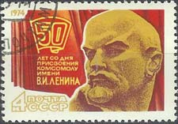
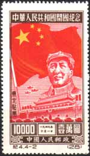
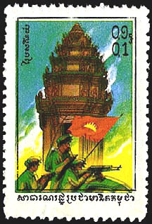
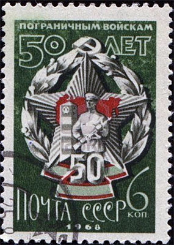
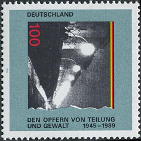

The World of Communism
in Stamps
Explore how stamps reflected, promoted and recorded the ideals, leaders and events of the communist era around the world.
Explore the Collection →
LeninThe First Leader of Soviet Communism

Mao’s HeritageMao Zedong and his legacy

Cambodia GenocideCambodia and the Khmer Rouge

Border TroopsFrontier guards on stamps

The Berlin WallThe divided Germany